Chapter 4 · Part 1 — Millions of Them!
Jack didn’t move. He kept staring down at the forest floor.
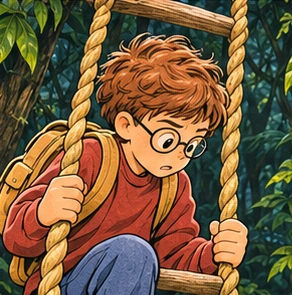
“What’s wrong?” Annie called from above.
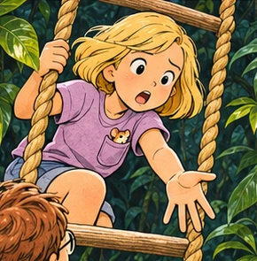
Jack didn’t answer.
“You don’t see any giant spiders, do you?” Annie said.
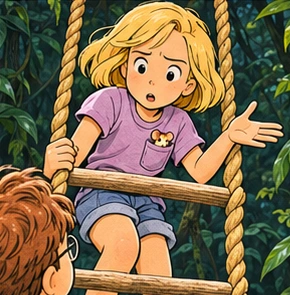
“Well … no.” Jack took a deep breath.
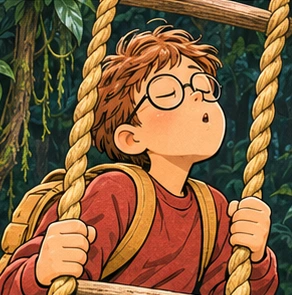
We have to keep going, he thought. We have to find the special thing for Morgan.
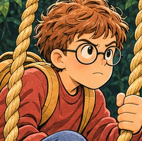
“No spiders. Nothing scary,” Jack called. And he started down the ladder again.
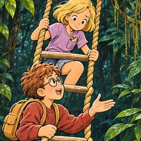
Jack and Annie climbed down through the understory. Finally they stepped onto the forest floor.
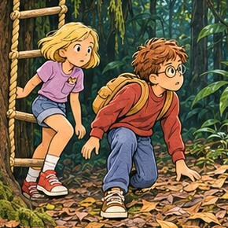
Only a few rays of light slanted through the gloom.
The trees were very, very tall and very wide. Vines and moss were hanging everywhere. The ground was covered with dead leaves.
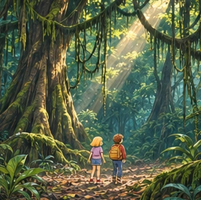
“Before we do anything, I’d better check the book,” said Jack.
He pulled out the rain forest book. He found a picture of the dark world under the treetops.
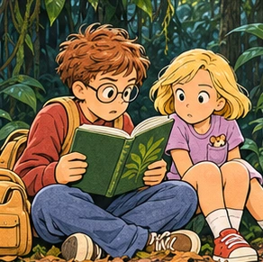
He read:
In the rain forest, many living creatures blend in with their surroundings. This is called camouflage.
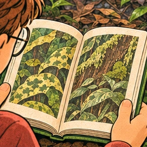
“Oh, man,” said Jack. He closed the book and looked around. “There’re tons of creatures down here. We just can’t see them.”
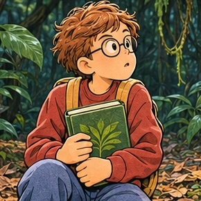
“Really?” whispered Annie.
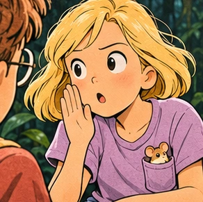
She and Jack peered around at the quiet forest. Jack felt unseen eyes watching them.
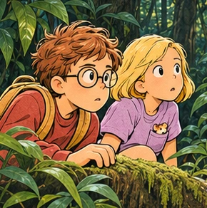
“Let’s hurry and find the special thing,” whispered Annie.
“How will we know when we find it?” Jack said.
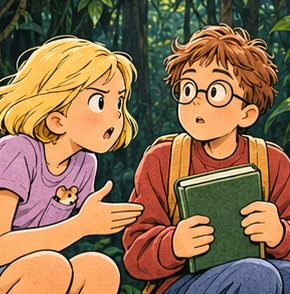
“I think we’ll just know,” said Annie. She headed off through the gloom.
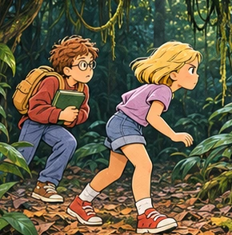
Jack followed. They crept between the huge trees and past hanging vines.
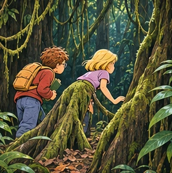
Annie stopped. “Wait—what’s that?”
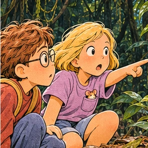
“What’s what?”
“Listen—that weird sound.”
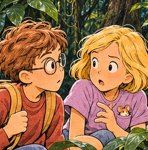
Jack listened. He heard a crackling sound. It sounded like a person walking over leaves.
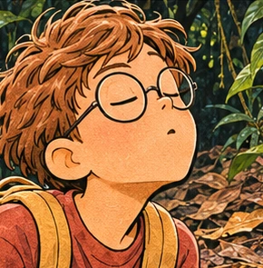
Jack looked around. He didn’t see anyone.
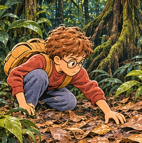
But the sound got louder.
Was it an animal? A giant bug? One that had never been named?
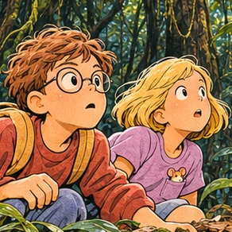
Just then the silent forest came alive.
Birds took off into the air. Frogs hopped over the leaves. Lizards ran up the tree trunks.
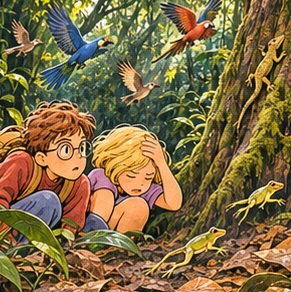
The weird noise grew louder and louder.
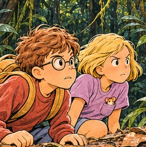